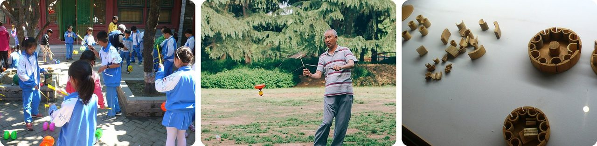

🌍 十大 斗蟋蟀和老底子的中国儿童游戏
2026年11月22日
1. 🇨🇳 中国的斗蟋蟀开打前，要先用草棍挠一挠
 在中国，斗蟋蟀就是让两只雄蟋蟀在一个小盆里对打。开打前要先称体重，因为比赛按体重配对。在上海，一共分九个级别，从 0.51 克到 0.74 克，所以一只斗蟋蟀比一枚回形针还轻。
在中国，斗蟋蟀就是让两只雄蟋蟀在一个小盆里对打。开打前要先称体重，因为比赛按体重配对。在上海，一共分九个级别，从 0.51 克到 0.74 克，所以一只斗蟋蟀比一枚回形针还轻。
接着，主人用一根细草棍挠自家蟋蟀的触须，把它惹火。中间的隔板一拿开，两只蟋蟀就扑上去开打。谁先往后退、转身逃跑、不叫了，或者跳出盆外，谁就输了。
更妙的是：输掉的蟋蟀放回场上，十次里只有一次会再打。可要是先把它摇一摇、往空中抛几下，十次里有六次会重新开打。
说白了，“飞一下”就是给蟋蟀打气。
2. 🇨🇳 一位宰相因为迷上斗蟋蟀，被认为拖垮了一个王朝
 斗蟋蟀已经有一千多年的历史，最早受到唐朝皇帝的喜爱，后来老百姓也玩了起来。13 世纪，南宋宰相贾似道还专门写了一本怎么斗蟋蟀的书。
斗蟋蟀已经有一千多年的历史，最早受到唐朝皇帝的喜爱，后来老百姓也玩了起来。13 世纪，南宋宰相贾似道还专门写了一本怎么斗蟋蟀的书。
他迷得太厉害了，人们认为他的这个爱好帮着拖垮了整个王朝。很久以后，在“文化大革命”（1966–1976）期间，政府把斗蟋蟀当成有钱人的玩意儿给禁了。
可它还是回来了。2010 年，中国人花在蟋蟀上的钱超过了 4 亿元（大约 6300 万美元），光是上海就有十几个蟋蟀市场。
可以把它想成：一个爱好，比喜欢它的王朝活得还长。
3. 🇨🇳 中国的蟋蟀冬天住在“长”进模子里的葫芦里
 在中国，养着玩的蟋蟀夏天住陶罐，冬天住葫芦（一种硬壳的果子，像小南瓜）。最讲究的葫芦不是刻出来的，而是“长”成那个样子的。
在中国，养着玩的蟋蟀夏天住陶罐，冬天住葫芦（一种硬壳的果子，像小南瓜）。最讲究的葫芦不是刻出来的，而是“长”成那个样子的。
宫里的花匠把一个刚结出来的小葫芦放进刻好花纹的模子里，葫芦越长越大，就把模子撑满，把花纹也“印”了下来。很长一段时间里，只有紫禁城，也就是皇帝住的宫殿，才能做这种葫芦。盖子也特地做过，好让蟋蟀的叫声更好听。
现存最老的模子葫芦是 1238 年的，收藏在日本的一座寺庙里。雍正皇帝连睡觉的时候手里都握着一个葫芦。
换句话说，蟋蟀的房子是在园子里种出来的，不是盖出来的。
4. 🇨🇳 毽子是用脚玩的羽毛球
 踢毽子，就是用除了手以外的任何部位，主要是脚，让一个挺沉的毽子一直不落地。毽子一般是四根羽毛插在橡胶底座上，重 15 到 25 克，差不多是四张打印纸那么重。
踢毽子，就是用除了手以外的任何部位，主要是脚，让一个挺沉的毽子一直不落地。毽子一般是四根羽毛插在橡胶底座上，重 15 到 25 克，差不多是四张打印纸那么重。
中国人从汉朝就开始踢毽子了，汉朝开始于两千两百多年前。它是从蹴鞠变来的，蹴鞠是一种很像足球的古老游戏，以前用来训练士兵。大家常常五到十个人围成一圈，就想让毽子别掉下来。
1936 年，一位来自江苏的中国运动员在 柏林奥运会 上表演了踢毽子，德国人也跟着玩起来了。在越南，它叫 đá cầu，是那里的国民运动。
它就是带羽毛的沙包球。
5. 🇨🇳 空竹会嗡嗡响，因为它是空心的

空竹（抖空竹，dǒu kōngzhú）就是一个两头带轮子的线轴，放在两根棍子之间的绳子上转。明朝末年，1572 年到 1620 年之间的一本书，把它叫作“空钟”（kōngzhōng），意思是“空中的钟”。这个名字就说明了秘密。它的轮子是空心的，上面开着小孔。空竹转得飞快时，空气从孔里冲过去，发出很响的 嗡嗡声。据说高手能让它一分钟转 2000 圈，差不多一秒钟 33 圈。
1792 年，一位传教士在北京写下了对它的描述，后来它在欧洲火了起来。火到什么程度？巴黎的警察局长还一度禁止在街上玩它。
所以，它是一个兼职当乐器的玩具。
6. 🇨🇳 中国的抽陀螺已经有三千多年历史
 陀螺是已知最古老的玩具，在有人住的每一块大陆上都找到过。在中国，考古学家发现了大约公元前 1250 年的陀螺，其中就有抽陀螺，所以那里的人已经转了大约 3270 年 的陀螺。
陀螺是已知最古老的玩具，在有人住的每一块大陆上都找到过。在中国，考古学家发现了大约公元前 1250 年的陀螺，其中就有抽陀螺，所以那里的人已经转了大约 3270 年 的陀螺。
抽陀螺是这样玩的：先把鞭子的绳子缠在陀螺上，再一甩鞭杆。绳子一下子松开，陀螺就被甩得转了起来。
在中国一些地方，彝族、佤族、瑶族和苗族的人到现在还在玩陀螺。从 1995 年起，打陀螺还成了全国少数民族传统体育运动会的比赛项目。
说白了，这个玩具得甩一鞭子才能开工。
7. 🇨🇳 跳皮筋就是一根会越升越高的大橡皮筋
 跳皮筋（tiàopíjīn）用的是一圈橡皮筋或者有弹性的绳子，至少六英尺长，差不多跟一个大人一样高。两个小朋友站在圈里，把皮筋套在脚踝上，绷得紧紧的。
跳皮筋（tiàopíjīn）用的是一圈橡皮筋或者有弹性的绳子，至少六英尺长，差不多跟一个大人一样高。两个小朋友站在圈里，把皮筋套在脚踝上，绷得紧紧的。
第三个小朋友在两根皮筋之间跳，做“里”“外”“侧”“踩”这些动作，常常一边跳一边念儿歌。一套动作全做对，皮筋就往上升：从脚踝 一直升到腰，甚至更高。
这个游戏传遍了全世界。在英国和澳大利亚叫 “elastics”（橡皮筋），有些地方叫 “French skipping”（法式跳绳），在菲律宾叫 “Chinese garter”（中国袜带）。
可以把它想成：一根要跳着舞穿过去的跳高横杆。
8. 🏠 在中国，这个格子游戏叫“跳房子”
 跳房子，就是把一个小东西，比如石子，扔进地上画好的带数字的格子里，然后单脚跳过一个个格子，再把它捡回来。在中国，它叫跳房子（tiào fángzi）。
跳房子，就是把一个小东西，比如石子，扔进地上画好的带数字的格子里，然后单脚跳过一个个格子，再把它捡回来。在中国，它叫跳房子（tiào fángzi）。
没人知道它到底是从哪儿来的。没有证据表明 1500 年代以前就有这个游戏，而且每个国家都给它起了自己的名字。在德国，它叫“天堂和地狱”；在意大利，它有个名字的意思是“钟”。
吉尼斯世界纪录里最快的一局跳房子，是阿什里塔·弗曼跳的，只用了 1 分 2 秒，差不多是刷牙时间的一半。
每个格子都是一间小房子，只能单脚去串门。
9. ⭕ 中国小孩滚铁环已经滚了大约三千年
 滚铁环很简单：用一根棍子推着一个大圈在地上滚，跟着它跑，别让它倒下。在中国，人们认为这个游戏可以追溯到公元前 1000 年，甚至更早。
滚铁环很简单：用一根棍子推着一个大圈在地上滚，跟着它跑，别让它倒下。在中国，人们认为这个游戏可以追溯到公元前 1000 年，甚至更早。
它并不总是受欢迎。19 世纪 40 年代的伦敦，报纸上全是对“铁环公害”的抱怨：孩子们的铁环老是撞到行人的小腿。警察把男孩女孩的铁环没收了，可抱怨反而越来越多。
到了 19 世纪 60 年代，查尔斯·巴贝奇怪滚铁环的男孩把铁环滚到马腿底下，害得骑马的人摔下来。1864 年，他还因为对铁环发起“十字军东征”，在英国议会上被人点名批评。
换句话说，一个铁环加一根棍子，就能让大人们慌了神。
10. 🇨🇳 中国的风筝是因为会发出声音才得名的
 传说哲学家墨子和鲁班在公元前 5 世纪就放过木头做的风筝。汉朝发明了纸以后，纸风筝就流行起来。到公元 549 年，已经有人用风筝传信，去搞救援行动。
传说哲学家墨子和鲁班在公元前 5 世纪就放过木头做的风筝。汉朝发明了纸以后，纸风筝就流行起来。到公元 549 年，已经有人用风筝传信，去搞救援行动。
到了唐朝，人们把竹笛和哨子绑在风筝上，让它发出声音。现在说的 风筝（fēngzheng） 就是这么来的：它是按风筝在风里发出的声音起名的。
如今，山东潍坊被称为世界风筝之都。那里有世界上最大的风筝博物馆，每年四月还会举办风筝节。
所以，中国风筝就是一个会飞的哨子。
趣闻
斗蟋蟀甚至还进了一个有名的中国鬼怪故事。在蒲松龄写的《促织》里，皇帝迷斗蟋蟀迷得不得了，一个男孩为了救父亲，变成了一只蟋蟀。这个故事 1740 年收在《聊斋志异》里出版，那是一整本讲神怪的故事书。如果你喜欢这个故事，那些奇奇怪怪的老故事，又是一整个可以去探索的世界。
图片来源（Wikimedia Commons）
- #1: Grillenkampf in China 1903.jpg by André Castaigne, Public domain
- #1: Shanghai Urban History Development Museum, Cricket Fighting (10178958006).jpg by Gary Todd from Xinzheng, China, CC0
- #1: A cricket match- tickling crickets with rats' whiskers to encourage them to fight. (1910).jpg by unknown, Public domain
- #2: Cricket fighting - container of crickets.jpg by Pauloleong2002, CC BY-SA 4.0
- #2: Chinese crickets.jpg by IvanWalsh.com from Shanghai, China, CC BY 2.0
- #2: Jia Sidao.1.jpg by Unknown authorUnknown author, Public domain
- #3: Cricket cages gourd and ivory 18th-19th centuries CE Qing Dynasty (1644-1911 CE) Beijing China.jpg by Mary Harrsch, CC BY-SA 4.0
- #3: MET 28 186 46.jpg by unknown, CC0
- #3: MET 28 186 7.jpg by unknown, CC0
- #4: Jianzi players.jpg by Janus Bahs Jacquet from Copenhagen, Danmark, CC BY-SA 2.0
- #4: Haikou People's Park - people playing jianzi - 01.jpg by Anna Frodesiak, CC0
- #4: Kick Shuttlecock (Jianzi) (flickr) by mikecogh, CC BY-SA 2.0
- #5: 学空竹的小学生.JPG by 三猎, CC BY-SA 4.0
- #5: 抖空竹的老人 #VSCO #latergram (flickr) by 小飞虹, CC BY-SA 2.0
- #5: 空竹零件.JPG by 三猎, CC BY-SA 4.0
- #6: Chinese top Dagny 1.JPG by Immanuel Giel, CC BY-SA 4.0
- #6: 赣州古城墙边公园玩陀螺的老人 打的人没在照片 (flickr) by Drnantu, CC BY-SA 2.0
- #6: Wooden spinning top and whip.jpg by Fumikas Sagisavas, CC0
- #7: Gummitwist-1998Kinder1.jpg by Werner 19:12, 1 October 2007 (UTC), CC BY-SA 3.0
- #7: PM NE 0303 30.jpg by PMRMaeyaert, CC BY-SA 4.0
- #7: Gummitwist-1998Kinder2.jpg by Werner 19:14, 1 October 2007 (UTC), CC BY-SA 3.0
- #8: 跳房子 Hopscotch - panoramio.jpg by lienyuan lee, CC BY 3.0
- #8: Chinese-American girl playing hopscotch 8d21950v.jpg by Marjory Collins, Public domain
- #8: SJACPS Hopscotch 191210 1.JPG by Honeybee, CC BY 3.0
- #9: 滚铁环的小孩 (flickr) by Drnantu, CC BY-SA 2.0
- #9: Boy with a hoop. (51915119994).jpg by Bernard Spragg. NZ from Christchurch, New Zealand, Public domain
- #9: Boys with hoops on Chesnut Street.jpg by Unknown authorUnknown author, Public domain
- #10: Kite of Chinese dragon.jpg by 虎眉, CC BY-SA 2.5 cn
- #10: Kite Flying Tiananmen Square (flickr) by moonlet.me, CC BY-SA 2.0
- #10: Weifang World Kite Museum.jpg by Ngguls, CC BY-SA 4.0

.jpg){kind=link}
.jpg){kind=link}


_Beijing_China.jpg){kind=link}


.jpg){kind=link}